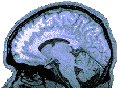
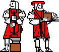
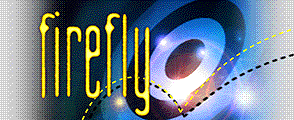
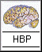
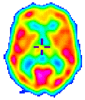

|
 | |
|
Deze pagina gaat over de versmelting van de machine met de mens. Worden machines intelligent? Worden mensen cyborgs? Het lijkt in ieder geval steeds dichterbij te komen. | |
|
MIT Artificial Intelligence Laboratory Home Page Informatie over het baanbrekende AI-onderzoek in het MIT. Zie ook hun projects and publications |
 |
|
Webdoggie Een voorbeeld van een agent dat The Autonomous Agents Group van het MIT op het web heeft gezet. Na aangegeven te hebben welke web-pagina's je leuk vindt, geeft The Webhound pagina's terug die je waarschijnlijk ook leuk zult vinden. |
 |
Firefly Ook ontwikkeld door het MIT, is dit systeem nu de basis van een eigen website. Met dit systeem kun je je favoriete cd's en artiesten ingeven waarna een lijst van cd's/artiesten verschijnt die de Firefly aanbeveelt. |
Iets soortgelijks als de Firefly is RARE, waarmee je je favoriete films en newsgroepen kunt opgeven en een reeks aanbevelingen terugkrijgt die daarop gebaseerd zijn.
| Smart NewsReader Deze newsreader laat zien waar het heen gaat: lees artikelen in nieuwsgroepen en geef elk artikel een beoordeling (goed of slecht). Aan de hand hiervan zal het programma proberen te voorspellen welke ongelezen artikelen je ook goed of slecht zal vinden. |
|
The Magical Web General Magic ontwerpt onder andere software die van zichzelf een bepaalde intelligentie hebben. |
|
Hot Java De volgende generatie webbrowser. Hiermee is het mogelijk geworden om naast tekst en plaatjes ook kleine programmaatjes op te halen en uit te voeren. De intelligent assistant komt daarmee weer een heel stuk dichterbij. |
Terminator 2 |
Cyborgs
(The Desire to Be Wired) Cyborgs zijn gedeeltelijk mens, gedeelteljk machine. Ze komen voornamelijk voor in science-fiction boeken en films zoals The Terminator. Toch is het idee zo gek nog niet. Mensen dragen steeds meer apparatuur op hun lichaam, zoals horloges en draagbare telefoons. Volgens Negroponte zal electronische apparatuur geïntegreerd worden in kleding tot softwear. Ook in het lichaam wordt apparatuur gedragen, zoals pacemakers. Volgens feministe Donna Haraway zullen alleen (geslachtsloze) Cyborgs er uiteindelijk toe bijdragen dat de ongelijke machtsverhouding tussen vrouwen en mannen zal verdwijnen. |
|
Gereedschap voor de hersenen Verbeter je denkkracht met Mind Gear: Mental Fitness Technology of Zygon's Learning Machine. Voor brainmachines kun je ook in Nederland terecht. |
|
The Whole Brain Atlas De hersenen in kaart gebracht. Bekijk ze in alle standen en staten. | ||
|
Zie ook het
Human Brain Project,
waarin een groot aantal onderzoeksinstituten de hersenen bestuderen |
 |
|
|
Stichting Neurale Netwerken Computers worden elk jaar weer beter, maar de hersenen blijven op veel gebieden onverbeterlijk. Door de hersenen te simuleren met een neuraal netwerk wordt gehoopt ook deze horde te kunnen nemen. |
|
Fuzzy Logic Archive Volgens de gewone logica is iets waar of niet waar. Volgens fuzzy logic kan iets ook `een beetje waar' zijn. Toepassingen zijn al te vinden in wasmachines en camera's. |
|
John Mount's Genetic Movies Een computer maakt plaatjes en mensen geven ze een beoordeling: ze zijn mooi of niet. Afhankelijk van deze beoordeling maakt de computer opnieuw plaatjes, waarbij de mooie plaatjes de overhand krijgen. Bekijk zelf hoe de plaatjes eruit zien als dit vaak genoeg wordt herhaald. Ook kun je filmpjes ophalen waarin je de plaatjes steeds `mooier' ziet worden. | |
| Meer over genetische algoritmen is te vinden in The Genetic Algorithms Archive. | |
The Game of Life
The game of life is een oud en erg eenvoudig
voorbeeld van kunstmatig leven.
Een cel sterft uit als het te weinig of juist teveel buurcellen heeft
en vermenigvuldigt zich als de `bevolkingsdichtheid' ideaal is.
Het intrigerende is dat de cellen echt lijken te leven.
Meer informatie over kunstmatig leven is te vinden
in Zooland.
Tierra
Tierra is een project dat geen organismen, maar programmacode
laat evolueren.
Deze stukjes programma vechten om de computer,
waarbij steeds kleine veranderingen plaatsvinden.
Een slechte verandering en het programma
sterft uit, een goede verandering en het programma gaat
overheersen.
Fractals
Een ander fenomeen waarbij de computer de natuur imiteert is de fractal.
Met een eenvoudige wiskundige formule kunnen tekeningen worden
gemaakt met de grilligheid die juist zo kenmerkend is voor
de natuur.
|
De Turing Test Alan Turing bedacht een methode waarmee bekeken kan worden of een computer de menselijke intelligentie kan benaderen: de Turing test. Met een terminal kan worden gepraat met een (niet zichbare) mens of computer. Als er geen onderscheid kan worden gemaakt tussen de mens en de computer, moet de computer de menselijke intelligentie hebben bereikt. |
|
Eliza Het eerste programma waarmee `gepraat' kon worden en dat bekend werd was Eliza. Bekijk een voorbeeld van een conversatie. Sindsdien zijn er nog allerlei andere dergelijke programma's geschreven, overigens niet met het doel de menselijke intelligentie te bereiken. Voorbeelden zijn HAL, Julia en een Eliza op het Web. Eind '94 is er zelfs een wedstrijd gehouden onder dergelijke programma's: Loebner Prize Competition in Artificial Intelligence. |
Julia |
|
 |
Distributed Artificial Intelligence and Multi-Agent Systems Een pagina met veel verdere verwijzingen naar informatie over kunstmatige intelligentie. Nog meer informatie is te vinden in de AI Subject Index en Resources, of de lange lijst met AI Related Information. |